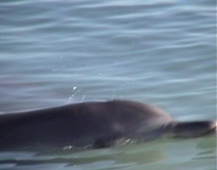
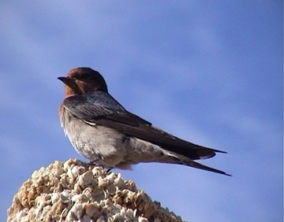
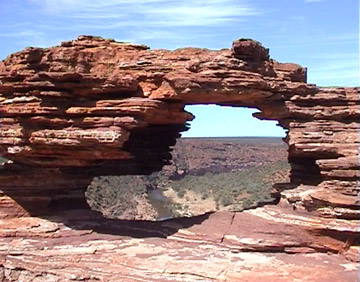
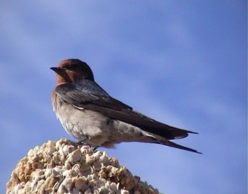
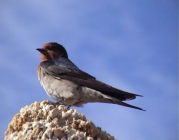

Shark Bay
Sunrise
Stromatolites - ancient living fossils:
The famous Dolphins of Monkey Mia - here's Nicky and Surprise:

Various birds - tern, swallow, pelicans

Scenery - Nature's Window and Sunset

Travel Pages

 
